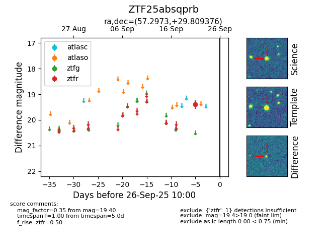

FINK: ZTF25absqprb
Lasair: ZTF25absqprb
ALeRCE: ZTF25absqprb
ZTF25absqprb (ztf,fink)
equatorial (ra, dec) = (57.2973,+29.80938)
galactic (l, b) = (162.8953,-18.94756)

last ztfr=19.40
1 ztfr detections